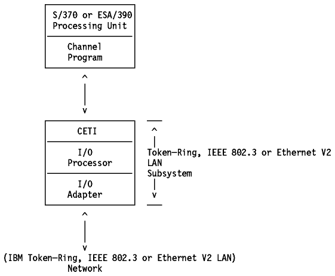

Table of Contents
Table of Contents  CTC
(Channel To Channel)
CTC
(Channel To Channel)Table of Contents CTC
(Channel To Channel)
The CETI interface allows communication from S/370 and ESA/390 hosts to all other IEEE 802.3, Ethernet Version 2, and IEEE 802.5 LAN-attached hosts, controllers, workstations and devices where matching line protocols are available. This includes the attachment of non-IBM network controllers.
The CETI interface minimizes the use of SIO instructions and I/O interruptions in the S/370 and ESA/390 host processors.
For more details about the CETI and its relationship to the S/370 and
ESA/390 software on the S/370 and ESA/390 channel command base, please
refer to ES/9000 Token-Ring and IEEE 802.3 LAN Programming Information.
Figure - CETI Connection shows an overview
of the CETI environments.

Figure: CETI Connection
TCP/IP for MVS supports the CETI.
For information about CETI support in TCP/IP for MVS, please refer to IBM TCP/IP Version 3 Release 1 for MVS: Customization and Administration Guide.
 SNALINK
SNALINK